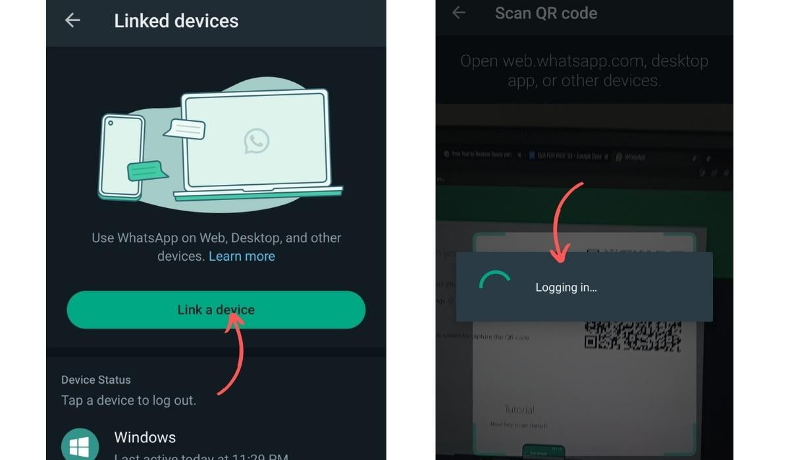

💚 WhatsApp Web: продление сессии и повторная авторизация
Для работы WhatsApp из My-Business CRM используется WhatsApp Web — веб-версия мессенджера, которая открывается в браузере. Сессия WhatsApp Web действительна ограниченное время, после чего требуется повторная авторизация.
✅ Как это работает в CRM:
При нажатии на кнопку WhatsApp в карточке клиента открывается WhatsApp Web в браузере по умолчанию. Если сессия активна — сразу открывается чат с клиентом. Если сессия истекла — потребуется повторно отсканировать QR-код.
При нажатии на кнопку WhatsApp в карточке клиента открывается WhatsApp Web в браузере по умолчанию. Если сессия активна — сразу открывается чат с клиентом. Если сессия истекла — потребуется повторно отсканировать QR-код.
📱 Как работает WhatsApp Web?
- WhatsApp Web — это веб-версия, которая синхронизируется с вашим телефоном
- Для работы требуется активное подключение телефона к интернету
- Сессия действует около 14 дней без повторного сканирования
- После истечения сессии нужно заново отсканировать QR-код
- При выходе из аккаунта на телефоне сессия также завершается
🔍 Как понять, что сессия истекла?
- При нажатии на кнопку WhatsApp в CRM открывается страница с QR-кодом вместо чата с клиентом
- В WhatsApp Web отображается надпись "Сканируйте QR-код"
- Появляется ошибка "Сессия истекла" или "Требуется повторный вход"
- WhatsApp Web показывает пустой экран без чатов
🔄 Как заново подключить WhatsApp Web (пошаговая инструкция)
1 Откройте WhatsApp Web
- Нажмите на кнопку WhatsApp в карточке клиента в My-Business CRM
- В браузере откроется страница web.whatsapp.com
- Вы увидите QR-код для сканирования
◼◼◼◼◼
◼◼◼◼◼
◼◼◼◼◼
[ QR-код для сканирования ]
2 Откройте WhatsApp на телефоне
- Запустите приложение WhatsApp на вашем смартфоне
- Убедитесь, что вы авторизованы в своём аккаунте
- Проверьте подключение к интернету (Wi-Fi или мобильные данные)
3 Отсканируйте QR-код
- В WhatsApp на телефоне нажмите на три точки (меню) → WhatsApp Web (или "Связанные устройства")
- Нажмите "Привязать устройство" (или "Сканировать QR-код")
- Наведите камеру телефона на QR-код на экране компьютера
- Дождитесь подтверждения — телефон завибрирует или появится уведомление об успешном подключении

Настройки → WhatsApp Web → Сканировать QR-код4 Подтвердите авторизацию
- На компьютере откроется список чатов из WhatsApp
- Сессия сохранена — повторное сканирование не потребуется до следующего истечения срока
- Теперь при нажатии на кнопку WhatsApp в CRM будет сразу открываться чат с клиентом
✅ Готово! WhatsApp Web снова подключён и готов к работе с CRM.
⏰ Как продлить сессию без повторного сканирования?
- Регулярно используйте WhatsApp Web — активное использование продлевает сессию
- Не выходите из аккаунта на телефоне — выход завершает все активные сессии
- Не очищайте куки браузера — это удалит сохранённую сессию
- Используйте тот же браузер — сессия привязана к конкретному браузеру
⚠️ Почему сессия могла сброситься?
- Истек срок действия сессии — обычно через 14 дней неактивности
- Вы вышли из аккаунта на телефоне — это завершает все сессии WhatsApp Web
- Очистка истории браузера — удаление куков сбрасывает авторизацию
- Смена браузера — сессия не переносится между браузерами
- Обновление браузера — в редких случаях может сбросить сессию
- Антивирус или файрвол — могут блокировать сохранение сессии
🔧 Возможные проблемы и решения
QR-код не сканируется
- Убедитесь, что камера телефона работает и имеет доступ к приложению WhatsApp
- Проверьте, что на телефоне включён доступ к камере для WhatsApp
- Попробуйте обновить страницу web.whatsapp.com (F5)
- Убедитесь, что QR-код полностью виден на экране монитора
Надпись "WhatsApp Web устарел"
- Устаревшая версия браузера — обновите браузер до последней версии
- Рекомендуемые браузеры: Google Chrome, Mozilla Firefox, Microsoft Edge, Яндекс.Браузер
- Обновите страницу и попробуйте снова
Телефон не подключается к WhatsApp Web
- Проверьте, что на телефоне активен интернет (Wi-Fi или мобильные данные)
- Убедитесь, что на телефоне установлена актуальная версия WhatsApp
- Перезапустите приложение WhatsApp на телефоне
- Попробуйте перезагрузить телефон
Чат с клиентом не открывается автоматически
- Проверьте формат номера телефона в карточке клиента (должен быть в международном формате: +79991234567)
- Убедитесь, что у клиента есть аккаунт WhatsApp по этому номеру
- Проверьте, что WhatsApp Web активен (виден список чатов)
💡 Полезные советы
- Закрепите вкладку WhatsApp Web в браузере — так вы случайно не закроете её
- Не закрывайте вкладку WhatsApp Web — сессия останется активной дольше
- Разрешите уведомления в WhatsApp Web — будете видеть новые сообщения
- Используйте тот же браузер для работы с CRM — сессия сохранится
- Периодически проверяйте статус подключения — открывайте WhatsApp Web раз в несколько дней
📌 Важно! WhatsApp Web требует активного подключения телефона к интернету. Если телефон выключен или находится в "режиме полёта" — WhatsApp Web не будет работать.
🚑 Не удаётся подключить WhatsApp Web?
Попробуйте:
1. Перезагрузить телефон
2. Очистить куки браузера для web.whatsapp.com
3. Использовать другой браузер
4. Проверить настройки антивируса
Если ничего не помогло — напишите в поддержку: company@mybusiness-crm.ru
Попробуйте:
1. Перезагрузить телефон
2. Очистить куки браузера для web.whatsapp.com
3. Использовать другой браузер
4. Проверить настройки антивируса
Если ничего не помогло — напишите в поддержку: company@mybusiness-crm.ru